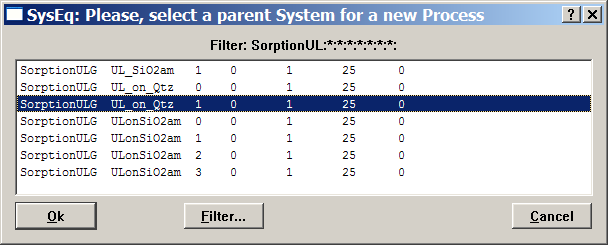
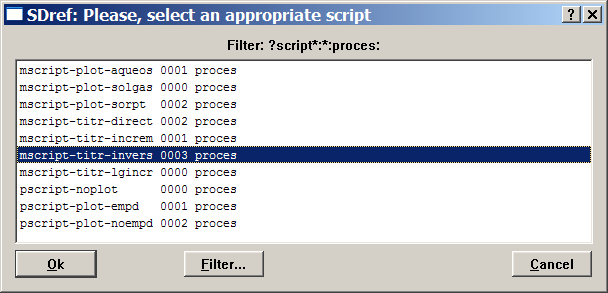

Previous Page Back to Start Page
(48) Creating a process simulator to model pH sorption edges
On this page,
we will simulate pH edges of adsorption of uranyl on crushed quartz at
ambient conditions using GEM TLM, as shown on Fig. 5 in the paper by Kulik [Radiochimica Acta 2002,
v.90, p.815-832]
(the paper can be downloaded as a pdf file from the journal's web
site).
We will follow more or less the same steps as described on pages 10 and 11 of this screenshot tutorial. The process simulator actually has to titrate the system with acid or base at constant solid/water ratio and total uranium loading. In a generated sequence of equilibrium states, we will follow the partitioning of uranium between aqueous solution and the sorbent surface as a function of pH in aqueous phase, which itself depends on the added amounts of acid or base.
Any process
simulation requires one "parent" chemical system definition with
calculated equilibrium state to start with. Hence, as a first step, we
will create such a system using the following recipe:
| Input |
AtmAirDry |
Aqua |
NaNO3 |
SiO2 |
UO3 |
Specific
surface area of Qtz sorbent |
NaF |
| Units |
kg |
g |
mol |
g |
mol |
m2/g |
mol |
| Amount |
30 |
994.3 |
0.1 |
100.01 |
1e-6 |
0.33 |
1e-9 |
Open the SorptionUL
modelling
project (if not done already) and, in the "Single Therrmodynamic
System"
dialog, use the "Record" "Create" menu command to create a new SysEq
record
keyed "SorptionUL:G:UL_on_Qtz:1:0:1:25:0:".
Set the recipe in the
"Compos", "Phase" and "IComp" pages of "System" window. If in doublt
what to do, please consult two previous tutorial pages that explain in
detail how to create and
modify a single system definition with sorption phase(s). The trace
amount of NaF is added (on the IComp page) in order to keep fluorine
chemical species for a
later modelling of the effect of F on uranyl partitioning. Add
also (on the "Compos" page) 1e-9 mol HNO3 and 1e-9 mol NaOH
- these items will be changed
later in automatic inverse titrations. The "Compos" page should finally
look like this:
When ready, check BCC  , make sure that all independent
components, aqueous, gas and sorption species are switched on, that
there is no G0 correction to sorbent Qtz in the sorption phase, that
Quartz and Silica-amorph single component phases are
switched off, and then calculate equilibrium
, make sure that all independent
components, aqueous, gas and sorption species are switched on, that
there is no G0 correction to sorbent Qtz in the sorption phase, that
Quartz and Silica-amorph single component phases are
switched off, and then calculate equilibrium  in this system.
You should see the following speciation in the gas and sorption
phases::
in this system.
You should see the following speciation in the gas and sorption
phases::
By checking e.g. the
"EqIC"
page of "EqDemo" window (use the  toolbar button), you can
find out that at pH = 5.5, ca. 96.6% of uranium is adsorbed in this
system, of which ca. 62.10 % as Sio>>OUL@ and 34.04 % as Sio>>OULH-2 surface complexes. This is
closely the same as the model point for pH=5.5 on Fig. 5,a in [Kulik,
2002]
paper, even though the present model is not exactly the same because it
assumes a competition of both UVI surface species for the
same kind of sites of density 0.14 nm-2. So, our "parent
system" is ready.
toolbar button), you can
find out that at pH = 5.5, ca. 96.6% of uranium is adsorbed in this
system, of which ca. 62.10 % as Sio>>OUL@ and 34.04 % as Sio>>OULH-2 surface complexes. This is
closely the same as the model point for pH=5.5 on Fig. 5,a in [Kulik,
2002]
paper, even though the present model is not exactly the same because it
assumes a competition of both UVI surface species for the
same kind of sites of density 0.14 nm-2. So, our "parent
system" is ready.
However, to model the pH
sorption edge, we need to know the range of additions of acid and base
necessary
to titrate the system from pH = 3.0 to pH = 9.5. The easiest way
to
determine this is to "clone" the parent system (e.g. changing the CSD
fourth field of SysEq record key to 0, i.e. "SorptionUL:G:UL_on_Qtz:0:0:1:25:0:"), and play around with
additions of HNO3 and NaOH in the "Compos" page of "System"
window (use  toolbar button)
until the desired pH values will be calculated. You should arrive at
about these numbers: to obtain pH = 3 or
less,
0.0013 mol HNO3 or more must be added; to get pH = 9.5 or
more,
0.05 mol NaOH should be added instead.
toolbar button)
until the desired pH values will be calculated. You should arrive at
about these numbers: to obtain pH = 3 or
less,
0.0013 mol HNO3 or more must be added; to get pH = 9.5 or
more,
0.05 mol NaOH should be added instead.
Let us proceed with
creating the process simulator for modelling pH adsorption edges. You
can close now the "Single Thermodynamic System" and related windows and
(from the "Modelling Project" dialog) click on the "Process Simulation"
button to open the "Process" window. There, execute the "Record"
"Create" menu command; from the appearing list, select the parent SysEq
record (as shown below) and press "Ok" to
proceed.

This will get you to a small dialog where two last fields of the new Process record key should be completed:
Complete them
as shown above (to identify shortly what this process simulator is
supposed to do) and click "Ok" to proceed. The following Process setup
wizard dialog
will appear:

Make sure
that the "G" radio button is selected, as shown above. This will
configure the process simulator to run the so-called inverse titration
sequence: the program will try to model a sequence of equilibria that
produce pH values in prescribed regular intervals. At each pH point, up
to 16 GEM calculations will be automatically performed by varying
additions of acid or base to the total bulk composition, until the
prescribed pH value is calculated at tolerable precision. When
ready, click
"Next" to proceed; this brings you to the second page of the Process
setup wizard.
Now, switch
to
the second page of this dialog, where you will have to specify some
dimensions that the program will use to allocate dynamic data in the
Process record and data structure. The first item nPV (number of points
to
be generated) is important.
Recall that we want to model the adsorption edge in the interval 3.0
<
pH < 9.5. A nice plot can be obtained using pH steps of 0.2
units,
or 5 calculated points per pH unit. This yields in total (9.4 - 3) * 5
+
1 = 33 points - hence, type 33 in the nPV
field.
Leave the next field as is - this will allocate the modC vector (will be visible on Page 1 of the "Process" window) to store the additions of titrant found in inverse titrations. The third field specifies how many lines will be plotted on the process simulator graph (and how many columns must be allocated in the yp table where the results will be collected). Enter 4 there - lines for three uranyl surface complexes and for their total. The next two fields define whether the experimental data points will be shown on the plot and how many points and parameters are there (there are 16 experimental points and 1 parameter - total % of adsorbed uranium). Finally, the second wizard page should look like this:
Press "Next"
when ready; you will see the "Step 3" wizard page (not shown here)
where it is nothing to change, so click "Next" again. On the appearing
"Step 4" wizard page (not shown), set the optional number of links to
data sources to 1, and click "Finish". You should see now Page 1 of the
"Process" window, where
the process iterators and the process math script must be specified.
Let us start
with the math script that defines how the parent system will be changed
to produce a required sequence of simulated equilibrium states. The
math script for
inverse titration sequences has a rather special
form
because it uses a built-in "golden section" 1-D minimization algorithm.
So, the best would be to take it from the template math script
collection and modify for our purposes.
To get the
template script, execute the "Help" "View scripts..." menu command. In
the appearing list, select one SDref record key ("mscript-titr-invers:0003:proces:"),
as shown below:

The selected
record now appears in the "SDref" window on your desktop. Switch on
Page 2 and
you will see there the template script for inverse titrations with
comments
that follow it. Mark the script as shown below (use the left mouse key)
and copy it (Ctrl-C):
Then switch
to
Page 1 of the "Process" window and paste (Ctrl-V)
the
template script into the P_expr text field.
The only necessary modification in that script is to change "HCl"
to "HNO3" in the 7-th line, because our base is
anyway NaOH, but our acid is HNO3 and not HCl.
What remains
is to set the process iterators correctly (the iterators are seen just
above the script text field).
The iTm
iterator defines the CSD variant numbers that will be automatically
inserted into the fourth field of each generated SysEq record key. A
good idea is to
set these varying from 1030 to 1094 with step 2 - to remind that we
will produce
pH points from 3.0 to 9.4 over 0.2. The next five iterators should be
left
as they were.
The remaining
three iterators require specific settings necessary for correct
operation of the inverse titration script and the "golden section"
algorithm. You can read comments to the template script that you have
just copied and pasted - there are explanations how the script works
and how to set up necessary process iterators. For us, it is
important to set the ipH iterator that will
generate prescribed pH values from 3.0 to 9.4 at step 0.2. The
tolerable
precision (0.01 pH unit) should be set in the iNu[1]
field.
The ipXi
iterator will define the range of titrant additions. The inverse
titration sequence
template math script assumes that, if the amount of titrant (kept by
the
program in the cEh cell) is negative, this means
the
addition of acid; if the amount of titrant is positive then base
will
be added instead. As we have found before, 0.0013 mol HNO3
are
needed to get pH below 3, and 0.05 mol NaOH should be added instead to
obtain
pH > 9.5 in this system. Hence, the ipXi[0]
value
should be set to -0.0013 (don't forget the minus sign!); the ipXi[1]
value will be 0.05; and ipXi[2] should contain the
default value 1e-8. Now, Page 1 of the "Process" window should
look like this:
Now, switch
to
Page 2 of the "Process" window, where the data sampling math script
must
be provided in the pgExpr text field. Like in the
previous
case, the easiest way is to take and modify one of the template math
scripts.
Execute the "Help" "View scripts..." menu command and select the SDref
record
key "mscript-plot-sorpt:0002:proces:", as shown
below:
From Page 2 of the appearing SDref window, copy and paste the appearing template script into the pgExpr field on Page 2 of the "Process" window. This script needs somewhat more editing than the previous one.
Firstly, the
sorption phase name should be changed to the actual one "SiO2_1sTLM"
in all places where it occurs (in the second operator). This operator
is supposed
to calculate a factor that converts mole amounts of surface complexes
into
their densities (in nm-2), and it will be used in some
examples later in this tutorial. However, in this example, experimental
data are expressed in percent of total uranium adsorbed (%Uads).
Therefore, the second operator should be commented out and a simple
operator "cXi =: b[{U}]/100;" added, which
calculates a factor that converts mole amounts of (mononuclear) surface
complexes of uranium into adsorbed uranium fractions in percent.
Secondly, the
next two operators that assign to yp[J][0] and yp[J][1]
must be edited to use actual names of uranyl surface complexes "Sio>>OUL@"
and "Sio>>OULH2-2". One more operator should
be added (for yp[J][2] and "Sio>>OULCH-4"
surface complex). The J index of sumulation point
will be changed automatically by the program. The last operator must be
modified to "yp[J][3] =: yp[J][0] + yp[J][1] + yp[J][2];" to compute the total adsorbed
fraction for three uranium surface species together. After all
editing, the script
on Page 2 should look like this:
In principle,
the process simulation can be calculated now (the experimental data and
plot legend
names can be entered later).
Switch to the "Graph" page; there you will see the xp
vector (abscissa) and the yp table with four
columns (ordinates)
that will be filled out by execution of the second script.
Now, click on
the "Calculate record data"  toolbar button to
start process simulation; click "Yes" to save the Process record
to database and, for the first time, click on the "No" button on
the appearing question "Use graphic window?". The program may
issue some messages if there were errors or misprints in the math
scripts (if this happened, correct the scripts and try
again).
toolbar button to
start process simulation; click "Yes" to save the Process record
to database and, for the first time, click on the "No" button on
the appearing question "Use graphic window?". The program may
issue some messages if there were errors or misprints in the math
scripts (if this happened, correct the scripts and try
again).
The
calculation proceeds and you should see how the lines in xp and
yp arrays are one-by-one filled with numbers. Depending on
the performance of your PC, the whole inverse titration sequence run
can take from less than a minute to several minutes. When the whole
calculation is done, the program will display "Calculation finished
Ok." in the title line of "Process" window.
Before
displaying the graph, It makes sense to enter the legend names into pY_Nam,
pX_Nam and pLnam fields on the "Graph"
page. Enter "% U ads" into pY_Nam;
"pH" into pX_Nam; "OUL@",
"OULH-2", "OULCH-4" and "Total"
into pLnam cells in this order (corresponding to
the indexation of columns in the script on Page 2). Now, click on
the "Plot data"  toolbar button to display the
graphic dialog (confirm saving the
Process record to database):
toolbar button to display the
graphic dialog (confirm saving the
Process record to database):
The graph
still needs to be customized, but it is better to do it after entering
the experimental data (now displayed as a (0,0) point) into the xEp
and yEp columns on the right side of
"Graph" page of the "Process" window. Here is the data:
pHexpr . %Uads(expr)
3.7 4
4.0 11
4.2 16
4.5 30
4.8 57
5.1 75
5.3 87
5.6 94
6.9 99
7.7 97.5
8.1 91
8.5 55
8.7 21
9.0 10
9.3 6
9.4 0.01
After you have entered the data, the "Graph" page should look like this:
Now, click on
the "Plot data"  toolbar button
to display the graphic dialog again (confirm saving the Process record
to database). On the Graphic dialog, click on the "Customize..." button
and get into the "Customize Graph" dialog. There you can adjust axis
intervals, ticks, colors and sizes of lines and symbols etc. by
clicking on the buttons with lines and symbols in the lower frame (see
below).
toolbar button
to display the graphic dialog again (confirm saving the Process record
to database). On the Graphic dialog, click on the "Customize..." button
and get into the "Customize Graph" dialog. There you can adjust axis
intervals, ticks, colors and sizes of lines and symbols etc. by
clicking on the buttons with lines and symbols in the lower frame (see
below).
Note
that, for displaying experimental points, you need to set the line thickness to
0 and the symbol size to at least 8 or 10. Clicking on the "Apply"
button shows the effect of changes immediately. When done, close the
customization dialog by clicking on the "Ok" button.
You can now
drag
the legend names and drop them on the appropriate places on the graph
that finally should look like this:
The plot can
be saved as a .png graphic file by clicking on the "Save Image" button.
The data used for plotting can be exported into ASCII file by
clicking on the "Print" toolbar button and
selecting the appropriate print script.
Compare the
graph with Fig. 5,a of [Kulik, 2002] paper. Both show well how the
uranyl surface speciation changes along the pH axis. A peculiar feature
of this system is that it has, in fact, two pH edges - the usual one at
pH between 3.5 and 5.5,
and a steep drop at pH between 7.5 and 9.2. This drop is a consequence
of
the extremely strong aqueous complexation of uranyl with carbonate ions
that out-competes
surface complexation in the alkaline pH range.
Take a look
on Page
3 of the "Process" window. There you will see a list of SysEq record
keys
that have been generated by this process simulator and saved in the
project
database. Any other calculated data (e.g. aqueous speciation, densities
of
(de)protonated surface complexes) can be extracted from those records
and
plotted by constructing GtDemo records, as it will be demonstratred
later in this tutorial.
Back to main GEMS-PSI page